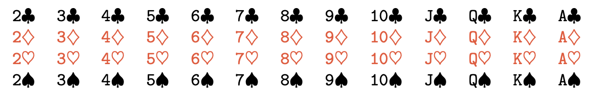
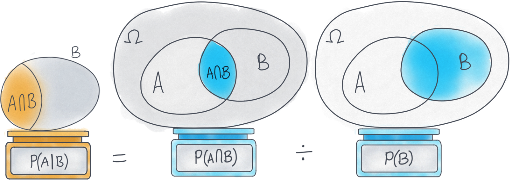

PSTAT 5A: Introduction to Probability
Lecture 4
2025-07-03
Welcome to Lecture 4
Introduction to Probability
Understanding uncertainty through statistics
Today’s Learning Objectives
By the end of this lecture, you will be able to:
What is Probability?
üéØ Definition
Probability is a measure of the likelihood that an event will occur
Probability Range
Ranges from 0 to 1 (or 0% to 100%)
0: Event will never occur (impossible)
1: Event will certainly occur (certain)
0.5: Event has equal chance of occurring or not
Three Ways to Express Probability
- Fraction: \(\frac{1}{2}\), \(\frac{3}{4}\), \(\frac{2}{6}\)
- Decimal: 0.5, 0.75, 0.33
- Percentage: 50%, 75%, 33%
Example
When we roll a die, there are six possible outcomes:
1, 2, 3, 4, 5, 6.
The probability of any of them turning up is 1/6 or 16%.

Why Study Probability?
Probability helps us:
- Make decisions under uncertainty
- Understand random processes
- Analyze data and draw conclusions
- Model real-world phenomena
- Assess risk and likelihood
Applications: Weather forecasting, medical diagnosis, finance, quality control, gaming, insurance
Random Experiments
A random experiment is a process that:
- Can be repeated under similar conditions
- Has multiple possible outcomes
- The outcome cannot be predicted with certainty
Sample Space
üéØ Definition The sample space (denoted \(S\) or \(\Omega\)) is the set of all possible outcomes of a random experiment
Sample Space Examples
- Coin flip: \(S = \{H, T\}\)
- Two coin flips: \(S = \{HH, HT, TH, TT\}\)

- üé≤ Die roll: \(S = \{1, 2, 3, 4, 5, 6\}\)
- Two die rolls

- \(S = \{A\heartsuit,\ 2\heartsuit,\ \dots,\ K\heartsuit,\\
\phantom{S = \{}A\diamondsuit,\ 2\diamondsuit,\ \dots,\ K\diamondsuit,\\
\phantom{S = \{}A\clubsuit,\ 2\clubsuit,\ \dots,\ K\clubsuit,\\
\phantom{S = \{}A\spadesuit,\ 2\spadesuit,\ \dots,\ K\spadesuit\}\)

Types of Sample Spaces
Finite Sample Space
- Limited number of outcomes
Infinite Sample Space
- Unlimited outcomes (countable or uncountable)
- Example: Measuring exact height of students
Events
üéØ Definition An event is a subset of the sample space
Simple event: Contains exactly one outcome (Ex: \(A = \{3\}\) (rolling a 3))
Compound event: Contains multiple outcomes (Ex: \(B = \{2, 4, 6\}\) (rolling an even number))
Event Notation
For a die roll with \(S = \{1, 2, 3, 4, 5, 6\}\):
- \(A = \{1, 3, 5\}\) (rolling an odd number)
- \(B = \{4, 5, 6\}\) (rolling 4 or higher)
- \(C = \{6\}\) (rolling a six)

We can describe events in words or using set notation
Set Operations Overview
üéØ Definition:
- Set: Collection of distinct objects
- Union: A OR B occurs
- Intersection: A AND B occurs
- Complement: A does NOT occur
- Sample Space: All possible outcomes
What is a Set?
üéØ Definition: A collection of things that share common characteristics. They can be elements, members, objects or similar terms.
Examples:
- Set of even numbers:
- Set of vowels: {a, e, i, o, u}
Union: A ∪ B
üéØ Definition: Contains all set elements, including intersections.
In Probability: The event that A OR B occurs (or both).
Intersection: A ∩ B
üéØ Definition: Area where two or more sets overlap.
In Probability: The event that A AND B occurs.
Properties:
Absolute Complement: \(A^c\)
üéØ Definition: All elements that do not belong to the set.
In Probability: The event that A does NOT occur.
Key Property:
Summary Table
| Union |
\(A \cup B\) |
Occurs if \(A\) or \(B\) |
\(P(A \cup B) = P(A) + P(B) - P(A \cap B)\) |
| Intersection |
\(A \cap B\) |
Occurs if \(A\) and \(B\) |
\(P(A \cap B)\) |
| Complement |
\(A^c\) |
Occurs if \(A\) does not occur |
\(P(A^c) = 1 - P(A)\) |
Probability Axioms: Commutative
Probability Axioms: Associative
Probability Axioms: Distributive
Probability Axioms: De Morgan’s Laws
Practice Examples
Example 1: In a class of students:
Q: What does A ∪ B represent?
Solution. Students who like Math OR Science (or both)
Example 2: What does A ∩ B represent?
Solution. Students who like BOTH Math AND Science
Example 3: What does \(A^c\) represent?
Solution. Students who do NOT like Math
Example: Set Operations
For die roll \(S = \{1, 2, 3, 4, 5, 6\}\):
\(A = \{1, 3, 5\}\) (odd numbers)
\(B = \{4, 5, 6\}\) (4 or higher)
Find:
\(A \cup B\)
\(A \cap B\)
\(A^c\)
Solution.
\(A \cup B = \{1, 3, 4, 5, 6\}\)
\(A \cap B = \{5\}\)
\(A^c = \{2, 4, 6\}\)
Mutually Exclusive Events
Events \(A\) and \(B\) are mutually exclusive (or disjoint) if they cannot occur simultaneously
\[A \cap B = \emptyset\]
When rolling a die
\(A = \{1, 3, 5\}\) (odd)
\(B = \{2, 4, 6\}\) (even)
\(A\) and \(B\) are mutually exclusive
The Classical Definition of Probability
üéØ Definition: For equally likely outcomes:
\[P(A) = \frac{\text{Number of outcomes in } A}{\text{Total number of outcomes in } S}\]
Probability of rolling an even number on a fair die
\[P(\text{even}) = \frac{3}{6} = \frac{1}{2}\]
Properties of Probability
Non-negativity: \(P(A) \geq 0\) for any event \(A\)
Normalization: \(P(S) = 1\)
Additivity: If \(A\) and \(B\) are mutually exclusive, then
The Complement Rule
If the probability of rain is 0.3, what’s the probability of no rain?
Solution. \[P(\text{no rain}) = 1 - P(\text{rain}) = 1 - 0.3 = 0.7\]
Practice Problem 1
A standard deck has 52 cards. What is the probability of drawing:
- A heart \(\heartsuit\)?
- A face card (Jack, Queen, King)?
- The ace of spades \(\spadesuit\)?

Solution.
\(P(\text{heart}) = \frac{13}{52} = \frac{1}{4}\)
\(P(\text{face card}) = \frac{12}{52} = \frac{3}{13}\)
\(P(\text{ace of spades}) = \frac{1}{52}\)
The Addition Rule
For any two events \(A\) and \(B\):
Why subtract \(P(A \cap B)\)?
Solution. We don’t want to double-count outcomes that are in both events
Addition Rule Example
Drawing from a standard deck:
\(A\): Drawing a heart \(\heartsuit\) (\(P(A) = \frac{13}{52}\))
\(B\): Drawing a face card (\(P(B) = \frac{12}{52}\))
What’s \(P(A \cup B)\) (heart OR face card)?
Solution. \(P(A \cap B) = \frac{3}{52}\) (face cards that are hearts)
\(P(A \cup B) = \frac{13}{52} + \frac{12}{52} - \frac{3}{52} = \frac{22}{52} = \frac{11}{26}\)
Conditional Probability
üéØConditional probability is the probability of event \(A\) given that event \(B\) has occurred
\[P(A|B) = \frac{P(A \cap B)}{P(B)}\]
provided \(P(B) > 0\)
Conditional Probability Interpretation
\(P(A|B)\) means:
We know event \(B\) has occurred
What’s the probability that \(A\) also occurred?
We “restrict” our sample space to only outcomes in \(B\)

Conditional Probability Example
Drawing a card from a standard deck:
Solution. \(P(A \cap B) = P(\text{heart}) = \frac{13}{52}\)
\(P(B) = P(\text{red}) = \frac{26}{52}\)
\(P(A|B) = \frac{13/52}{26/52} = \frac{13}{26} = \frac{1}{2}\)
Independence
üéØ Definition Events \(A\) and \(B\) are independent if:
\[P(A|B) = P(A)\]
or equivalently:
\[P(A \cap B) = P(A) \times P(B)\]
Knowing that \(B\) occurred doesn’t change the probability of \(A\)
Independence Example
Two coin flips:
Q: Are \(A\) and \(B\) independent?
Solution. \(P(A) = \frac{1}{2}\), \(P(B) = \frac{1}{2}\)
\(P(A \cap B) = P(\text{HH}) = \frac{1}{4}\)
\(P(A) \times P(B) = \frac{1}{2} \times \frac{1}{2} = \frac{1}{4}\)
Yes, they are independent!
Mutually Exclusive vs. Independent
Mutually Exclusive (left): the circles A and B do not overlap, so \(P(A\cap B)=0\).
Independent (right): the circles overlap, and we’ve sized the intersection so that \(P(A\cap B)=P(A)\,P(B)\).
Mutually Exclusive vs. Independent Example
Draw a single card from a 52-card deck:
Let A={“draw an Ace”}, so P(A)=4/52.
Let B={“draw a King”}, so P(B)=4/52.
Q: What is \(P(A\cap B)\) ?
Solution. They’re disjoint (you can’t draw an Ace and a King), so \(P(A\cap B) = 0\).
But \(P(A)\,P(B) = \frac{4}{52}\times\frac{4}{52} = \frac{16}{2704} \neq 0\).
Hence, \(P(A\cap B)\neq P(A)P(B)\), so they’re not independent.
Multiplication Rule
General case: \(P(A \cap B) = P(A) \times P(B|A)\)
Independent events: \(P(A \cap B) = P(A) \times P(B)\)
Tree Diagrams
üéØ Definition Tree diagrams help visualize sequential events and calculate probabilities.
Practice Problem 2
A jar contains 5 red balls and 3 blue balls. Two balls are drawn without replacement.
What’s the probability both balls are red?
What’s the probability the first is red and second is blue?
Solution.
\(P(\text{both red}) = \frac{5}{8} \times \frac{4}{7} = \frac{20}{56} = \frac{5}{14}\)
\(P(\text{red then blue}) = \frac{5}{8} \times \frac{3}{7} = \frac{15}{56}\)
Law of Total Probability
üéØ Definition
If events \(B_1, B_2, \ldots, B_n\) form a partition of the sample space, then:
\[P(A) = P(A|B_1)P(B_1) + P(A|B_2)P(B_2) + \cdots + P(A|B_n)P(B_n)\]
Law of Total Probability Example
A factory has two machines:
Machine 1: Produces 60% of items, 5% defective
Machine 2: Produces 40% of items, 3% defective
Q: What’s the overall probability an item is defective?
Solution. \(P(\text{defective}) = P(D|M_1)P(M_1) + P(D|M_2)P(M_2)\)
\(= 0.05 \times 0.6 + 0.03 \times 0.4 = 0.03 + 0.012 = 0.042\)
Bayes’ Theorem
üéØ Definition \[P(A|B) = \frac{P(B|A) \times P(A)}{P(B)}\]
This allows us to “reverse” conditional probabilities
Named after Thomas Bayes (1701-1761)
Bayes’ Theorem Components
- \(A,B\): Events
- \(P(A|B)\): Posterior probability - what we want to find
- \(P(B|A)\): Likelihood - given \(A\), probability of observing \(B\)
- \(P(A)\): Prior probability - initial probability of \(A\)
- \(P(B)\): Marginal probability - total probability of \(B\)
Bayes’ Theorem Example
Medical test for a disease: 1
Disease affects 1% of population
Test is 95% accurate for sick people
Test is 90% accurate for healthy people
Q:If someone tests positive, what’s the probability they have the disease?
Bayes’ Theorem Solution
Let:
Given:
Solution. \(P(T^+) = P(T^+|D)P(D) + P(T^+|D^c)P(D^c)\)
\(= 0.95 \times 0.01 + 0.10 \times 0.99 = 0.1085\)
Bayes’ Theorem Solution (cont.)
\[P(D|T^+) = \frac{P(T^+|D) \times P(D)}{P(T^+)} = \frac{0.95 \times 0.01}{0.1085} \approx 0.088\]
Surprising result: Even with a positive test, there’s only an 8.8% chance of having the disease!
This is due to the low base rate of the disease
Common Probability Mistakes
- Confusing \(P(A|B)\) with \(P(B|A)\)
Prosecutor’s fallacy is a specific error in interpreting conditional probabilities. Confusing
\(P(\text{Evidence}\mid\text{Innocent})
\quad\text{with}\quad
P(\text{Innocent}\mid\text{Evidence})\).
Ex: OJ Simpson Case 1
Common Probability Mistakes
Base rate fallacy is when you ignore or underweight the prior probability \(P(H)\) of a hypothesis, focusing only on the new evidence \(E\).
- Double counting in union calculations
Practice Problem 3
Two fair dice are rolled. Find:
- \(P(\text{sum} = 7)\)
- \(P(\text{sum} = 7 | \text{first die shows 3})\)
- Are these events independent?
Solution.
6 ways out of 36: \(P(\text{sum} = 7) = \frac{6}{36} = \frac{1}{6}\)
Given first die is 3, need second die to be 4: \(P(\text{sum} = 7 | \text{first} = 3) = \frac{1}{6}\)
Yes, they’re independent since \(P(A|B) = P(A)\)
Counting and Probability
Sometimes we need to count outcomes:
Counting Example
Q: How many ways can you arrange 5 people in a row?
Solution. This is a permutation: \(P(5,5) = 5! = 120\) ways
Q:How many ways can you choose 3 people from 5 for a committee?
Solution. This is a combination: \(C(5,3) = \binom{5}{3} = \frac{5!}{3!2!} = 10\) ways
Probability with Counting
Example: A committee of 3 people is chosen from 8 people (5 women, 3 men). What’s the probability all 3 are women?
Solution. Total ways to choose 3 from 8: \(\binom{8}{3} = 56\)
Ways to choose 3 women from 5: \(\binom{5}{3} = 10\)
Probability: \(\frac{10}{56} = \frac{5}{28}\)
Real-World Applications
Medical Diagnosis: Using Bayes’ theorem for test interpretation
Quality Control: Probability of defective items
Finance: Risk assessment and portfolio theory
Sports: Probability of wins, fantasy sports
Insurance: Calculating premiums based on risk
Problem-Solving Strategy
- Identify the sample space and events
- Determine if events are independent or mutually exclusive
- Choose the appropriate rule or formula
- Calculate step by step
- Check if your answer makes sense
Practice Problem 4
A bag contains 4 red, 3 blue, and 2 green marbles. Three marbles are drawn without replacement.
Find the probability that: a) All three are red b) No two are the same color c) At least one is blue
Practice Problem 4 Solutions
Solution.
All red: \(\frac{4}{9} \times \frac{3}{8} \times \frac{2}{7} = \frac{24}{504} = \frac{1}{21}\)
Different colors: \(\frac{4 \times 3 \times 2}{9 \times 8 \times 7} \times 3! = \frac{24 \times 6}{504} = \frac{144}{504} = \frac{2}{7}\)
At least one blue: \(1 - P(\text{no blue}) = 1 - \frac{6 \times 5 \times 4}{9 \times 8 \times 7} = 1 - \frac{120}{504} = \frac{384}{504} = \frac{16}{21}\)
Common Questions
Q1.: “Why isn’t \(P(A \cup B) = P(A) + P(B)\) always?”
A: We’d double-count outcomes in both events
Q2.: “How do I know if events are independent?”
A: Check if \(P(A|B) = P(A)\) or if \(P(A \cap B) = P(A) \times P(B)\)
Q3.: “When do I use Bayes’ theorem?”
A: When you want to “reverse” a conditional probability
Looking Ahead
Next lecture:
Random Variables and Probability Distributions
Discrete vs. continuous random variables
Expected value and variance
Final Thoughts
Probability is the foundation of statistics:
Helps us quantify uncertainty
Provides tools for making decisions with incomplete information
Essential for understanding statistical inference
Practice: The key to mastering probability is working through many problems!
Questions?
Office Hours: Thursday’s 11 AM On Zoom (Link on Canvas)
Email: nmathlouthi@ucsb.edu
Next Class: Random Variables and Distributions